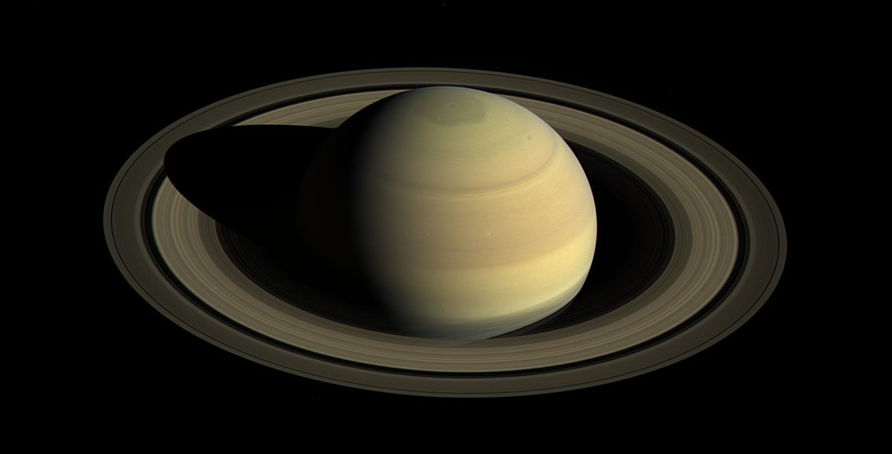

Saturno é o sexto planeta a partir do Sol e o segundo maior do Sistema Solar. Assim como Júpiter, é um gigante gasoso formado principalmente por hidrogênio e hélio. É famoso pelo seu impressionante sistema de anéis, o maior e mais brilhante entre todos os planetas.
Cerca de -140 °C
116.460 km de diâmetro (9 vezes o da Terra)
Entre 1,2 bilhão e 1,7 bilhão de km